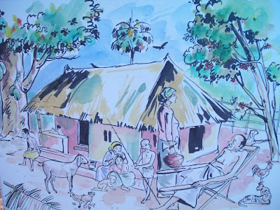
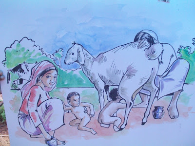
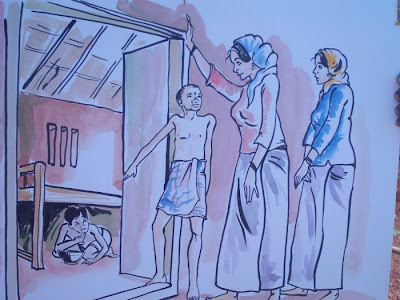

<!DOCTYPE html>

<html lang = "en">
    <head>
        <meta charset = "utf-8">
        <meta name="viewport" content="width=device-width, initial-scale=1.0">
        <title>Video</title>
        <link rel = "stylesheet" href = "style.css">
    </head>

    

</html>


        
        
        

        img 
        {
            float: left;
            width:  300px;
            height: 300px;
            object-fit: cover;
        }

        
        
        
        
        

        <p class = "aboutus" style = "margin-top: 60px;">
            At The Deens Academy, we believe that the objective of education is not just to inform, but also to 
            empower and transform. With this philosophy at its core, children make the transition from dependence 
            to independence in a secure, stimulating and multi-cultural environment where each child can learn, 
            thrive and achieve his or her fullest potential and most importantly, have fun in the process.
        </p>
        <p class = "aboutus">
            Every child is encouraged to explore his or her true potential within a stimulating atmosphere that 
            sparks exploration and creativity. Experienced and knowledgeable teachers help unlock each child’s 
            hidden potential and foster growth, while a versatile curriculum proffers a balanced blend of academic 
            and experiential learning providing the elements that reinforces the larger objective of providing a 
            well-rounded and holistic education.
        </p>
        <p class = "aboutus">
            The Deens Vision is to empower students with skills and talents in natural environs which provides the 
            perfect setting for children to develop a love of learning and achieve academic excellence to enable 
            them to contribute to our dynamic society. We consider the whole to be only as strong as its constituent 
            parts. For ultimately, our mission is to build a sturdy foundation – brick by brick – on which every 
            child can stand firmly and navigate the route to excellence with confidence, courage and conviction.
        </p>